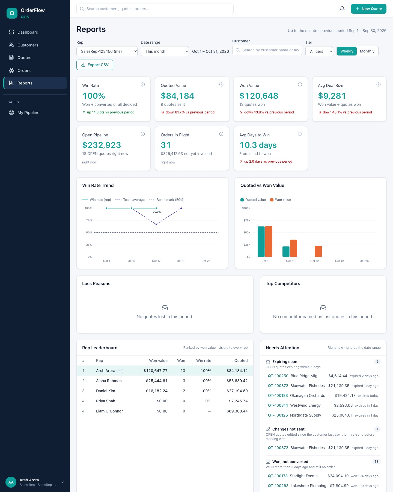
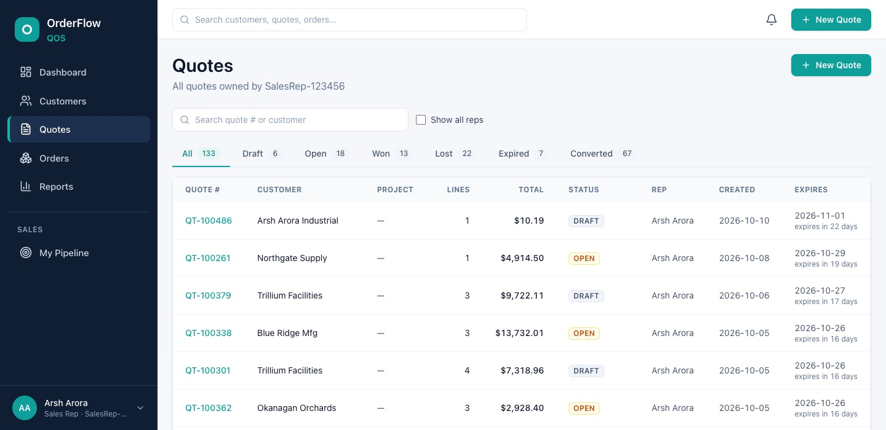
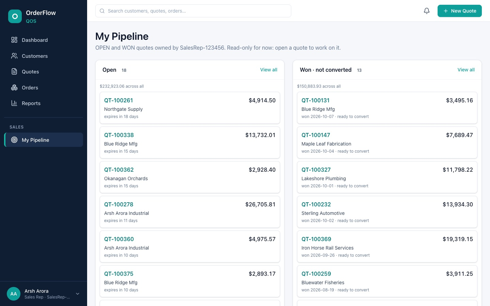
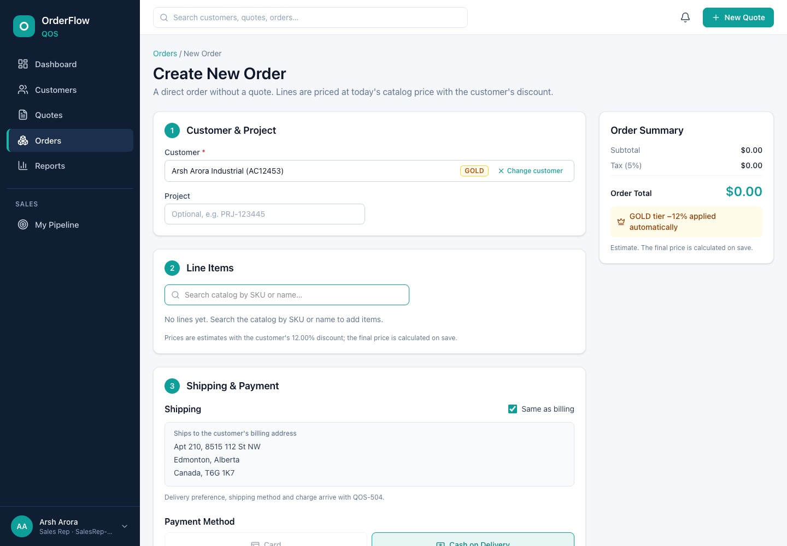

Featured2026Private repo, demo on request
OrderFlow QOS: Quote-to-Order Platform
A CPQ-style platform where sales reps build priced quotes, convert them to orders and track their pipeline. I ran it like a real product team: I directed 12 role-based AI agents (product owner, architect, researcher, developers, QA) through agile sprints, with every change code-reviewed and tested.
- Built for scale: keyset pagination, batched GraphQL loading (no N+1), trigram search, and rollup tables kept current inside the write transaction. Every screen stays under its budget at 2M quotes.
- Correct money: tier pricing in exact decimal math, a quote state machine, and idempotent quote-to-order conversion guarded by DB constraints and optimistic locking.
- Quality first: 200+ automated tests (JUnit, Testcontainers, Vitest). QA and acceptance cycles found 12 bugs and every one was fixed before merge.
- Reports that help reps: win rate, pipeline and leaderboard with drill-downs, a "needs attention" panel and CSV export.
Java 21Spring BootGraphQLPostgreSQLFlywayReact 19TypeScriptTanStack QueryGitHub Actions



